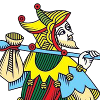

LA VOIE ET L’ESPRIT DU TAROT OU QUAND DEVIENT-ON CARTOMANCIEN
LA FIABILITE DU TAROT RESIDE DANS SA LONGUE HISTOIRE.

Sans démonstration physique de l’existence d’une énergie émanant des arcanes, avec des pratiques rituelles souvent superstitieuses, voir inefficaces, qui ajoutent mystères et confusions, comment peut-on accorder du crédit à des bouts de carton imprimé ?
L’esprit du Tarot n’a aucune explication apparente. Même une vérité théorique n’est pas précisable.
Croire en la vérité des cartes est en soi un acte de foi : on croît ou pas en l’art que l’on exerce !
C’est donc pousser son entendement au-delà de ce qui est visible, tangible et concevoir une sorte de voyage intérieur qui invite à unir sentiments, émotions, savoir et raison dans le but de disposer de nouvelles possibilités porteuses de pensées personnelles, droites, claires et sans déviation.
C’est faire l’expérience de l’écoute de sa pensée dans la lecture des cartes, de raisonner par une voie différente mais tout aussi valable, jusqu’au moment où les doutes intérieurs, les préjugés trouvent le silence et laissent la place à un afflux d’idées, de ressentis, de certitudes qui stimulent l’audace de la réflexion et l’aptitude à percevoir cette communication intuitive.
Pour celui qui prête attention à cette perception révélatrice, naît en lui la capacité d’accepter ce qu’il pense, ce qu’il ressent comme quelque chose d’utile à son discernement, à la compréhension de sa vie et à la prise de décisions.
Orienter votre esprit vers ce lien subtil dans la foi en vos propres capacités et soyez convaincu de l’existence de cette qualité naturelle de penser par soi même.
Les 22 arcanes majeurs du Tarot de Marseille permettent de se connecter sur sa personnalité, sa façon d’être et de réagir, aussi de voir ce qui vient pour se préparer, y compris ce dont nous sommes dupes - Voilà d’inestimables services ! -.
Ces arcanes appelées « Chemin de sagesse » aux principes universels à haute portée vertueuse et philosophique, comportent une vertu primordiale :
- celle de transformer le néophyte en chercheur de savoir, qui passionné à se cultiver sans cesse, teste, sonde, compare, fouille, épluche, analyse, déduit, consigne et recommence l’expérimentation dans la variété des applications du Tarot.
Une relation s’instaure d’où provient le constat de leurs exactitudes, elles étonnent de leurs prouesses ceux qui pensaient être incapable de deviner quoique ce soit avec ces feuilles cartonnées et elles rendent de plus en plus limpide la voie du Tarot.
L’essence du Tarot enjoint à amalgamer, à combiner :
-Les interprétations des lames en fonction de leurs localisations dans un tirage qui sont une représentation de l’éventail des possibilités liées à la réalité d’une situation ;
-Le message symbolique des arcanes majeurs qui incitent à vouloir comprendre le secret et mystérieux engrenage de la vie. (On rapporte que les enfants italiens du moyen-âge utilisaient le jeu du Tarot pour s’initier à la connaissance des vertus et de la sagesse universelle).
-Le lien subtil, produit de nos centres de perceptions endormis quelque part dans la profondeur de notre être. L’inspiration n’est-elle pas l’arme parfaite des créateurs ; l’intuitiondes scientifiques n’est-elle pas à l’origine de découvertes ?
-Et les valeurs de vos expériences obtenues de façon empirique car chaque temps porte la récolte du temps précédent, toujours selon vos principes d’actions et vos convictions.
Cette essence du Tarot édifiée en chemin tracé, balisé, jalonné, marqué de vos empruntes, devient un nutriment de l’intellect, toujours disponible, un humble serviteur à qui l’on confère un sens particulier, qui procure confort, détente agréable, envie, courage, lucidité, confiance, qui offre d’agir librement et volontairement avec lui et qui intervient dans notre vie si seulement nous lui demandons.
L’efficacité de ses services est connue de tous ceux qui ont osé, sérieusement, solliciter ses prestations.
Tournez sa réflexion vers cette nature du Tarot, l’inviter à prendre pied dans nos habitudes et nos activités quotidiennes, développe des échanges, non plus avec un jeu de cartes, mais avec une entité qui s’active si on la questionne, avec une individualité qui prête aide et assistance si on la consulte.
Nous sommes le facteur dominant de cette sublime relation, nous ne sommes pas soumis à une autorité ou manipuler par des forces obscures, c’est nous qui décidons de nous ouvrir consciemment à l’esprit du Tarot, de commencer à l’imaginer, de faire comme-ci il existait pour peu à peu le voir apparaître, puis le reconnaître et surtout plus confiant nous l’acceptons comme un ami aux conseils sages et éclairants.
L’étude du Tarot peut être entreprise comme un art de penser, une progression du développement de sa conscience où l’on cesse de se définir et de se comparer dans un système rationnel à la poursuite de limites et d’explications, dans l’absence de subjectivité et la crainte du changement. L’être humain est esprit et matière, il existe grâce au rapport entre ces deux natures.
Se sentir en harmonie avec son esprit c’est considéré que les réponses à nos questions et les solutions à nos problèmes se trouvent dans notre nature intime, mais aussi en même temps ces réponses et ces solutions doivent être applicables et en adéquation avec notre réalité matérielle et le monde concret où nous vivons.
C’est faire la paix avec soi-même et vivre en paix avec les autres.
Alors, me direz- vous :
« Si ma conscience éveillée désir le changement continuel, qu’elle évolue sans but précis, que le tarot est un instrument de méditation où chacun peut y puiser en fonction de ses croyances et de sa sensibilité une compréhension de ses comportements et de tous les aspects de l’existence sans rien nier du facteur matériel, que le Tarot est d’abord une école de philosophie avant d’être un art divinatoire : suis-je devenu tarologue ? »
Je vous répondrai :
« Oui, vous n’êtes plus seul, le Tarot est à votre disposition ! »